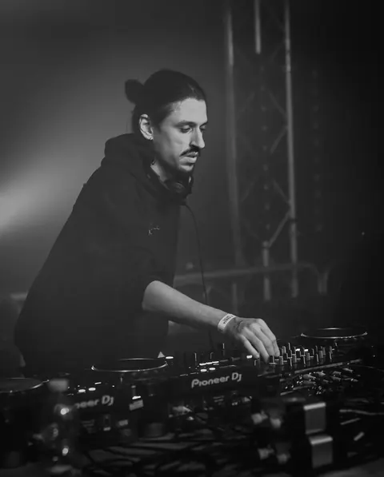

01
Djambe
DJ — Pubbliche relazioni
Djambe è un DJ con base a Venezia, attivo nella scena bass music italiana con un sound che unisce jungle, drum and bass, dubstep e influenze UK.
Anni di esplorazione tra club, eventi e sound system di tutto il Nord Italia, condividendo il palco con nomi come Black Sun Empire, QZB e HLZ.
Fondatore di New Waves Underground Movement. Con il collettivo ha ideato e conduce Bass Files, format di interviste e dj set in collaborazione con Drum And Bass Italia, e cura la collaborazione con Radio Ombra, radio indipendente con base al Chet, locale storico di Venezia.
Nei suoi set cerca sempre una linea di bassi profondi e ritmiche sostenute.